UGUI的所有组件都必须在画布上才能显示，画布可以手动创建也可以自动生成。
当创建UGUI组件时，如果场景中没有画布就会自动创建一个画布。
画布组件叫做Canvas，创建后在组件中有一个选项 Pixel Perfect 这个选项勾选后会让ui的显示更清晰。同时消耗的性能也会提升。
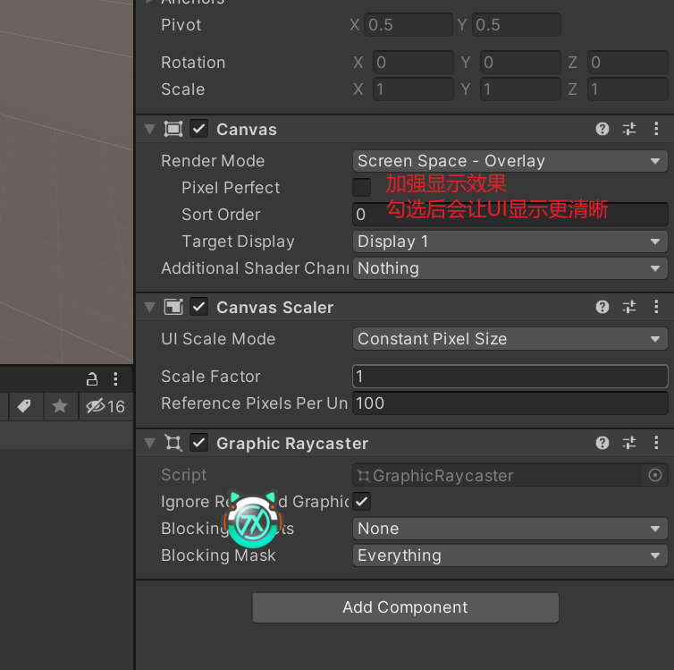文本控件是一个常用的控件，常用的选项如下
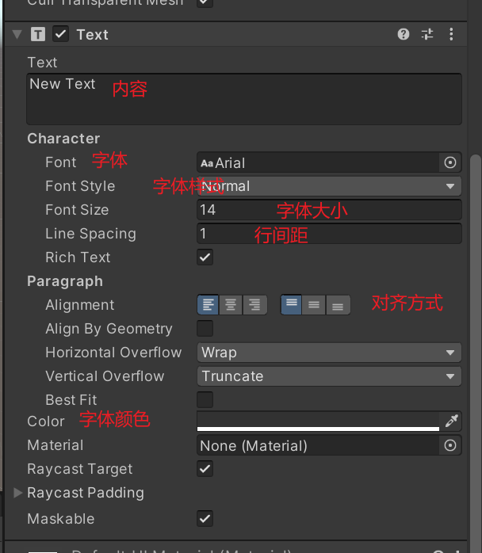其中在Text组件中有个选项叫Rich Text，这个选项叫富选项，勾选后就能像写HTML一样修改文字样式。
例如通过color修改单个文字颜色(具体可以查看官方文档)
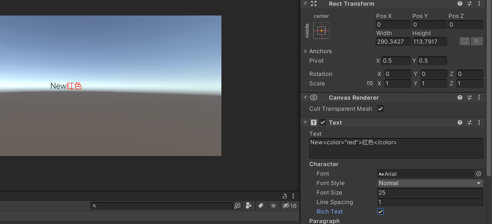图片组件比较简单，常用功能如下
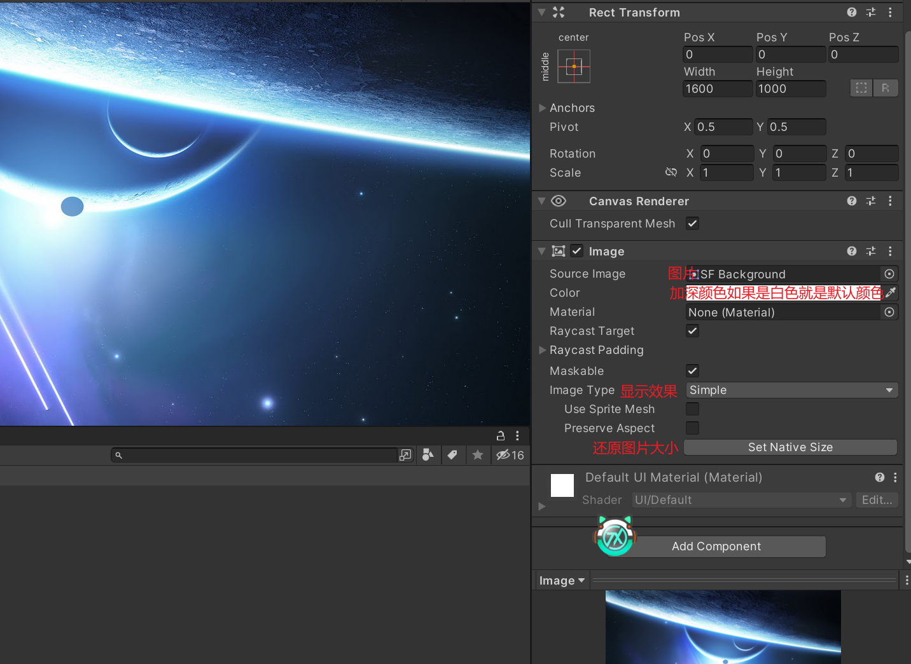在图片显示模式中第二个选项需要先导入一个包才能使用
这个包叫做2DSprite,如果创建的是2D项目会默认导入这个，如果是3D需要手动导入
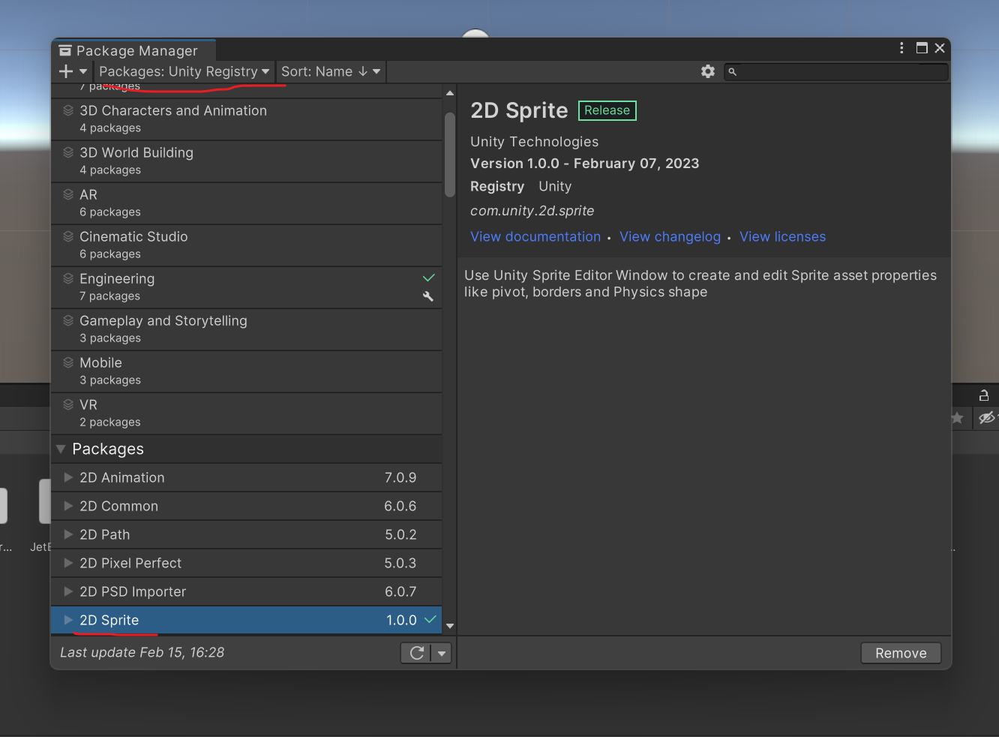导入后就能将图片显示模式切换为第二个：Sliced模式，这个模式下可以给图片安一个框，框内的内容会会被拉伸，但框不会受影响
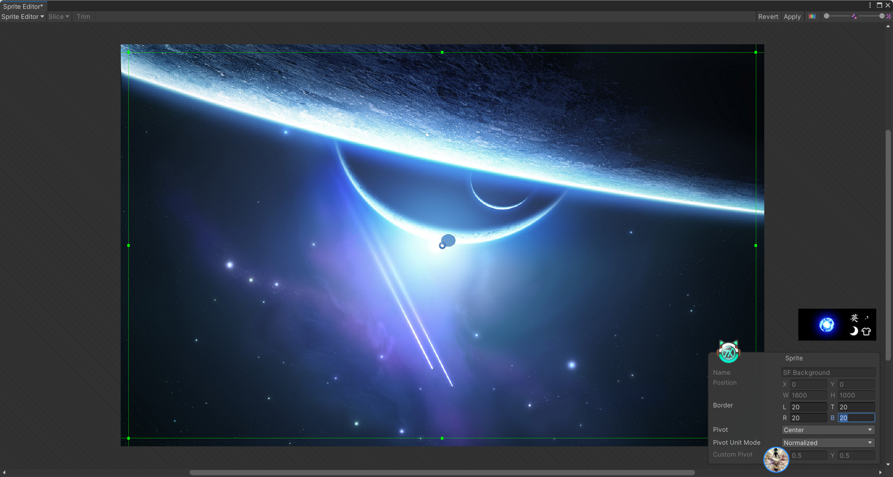像这样为图片设置一个框，绿线内就是框内，绿线外是不受拉伸影响的，也就是拉伸时是不会破坏框内像素的大小
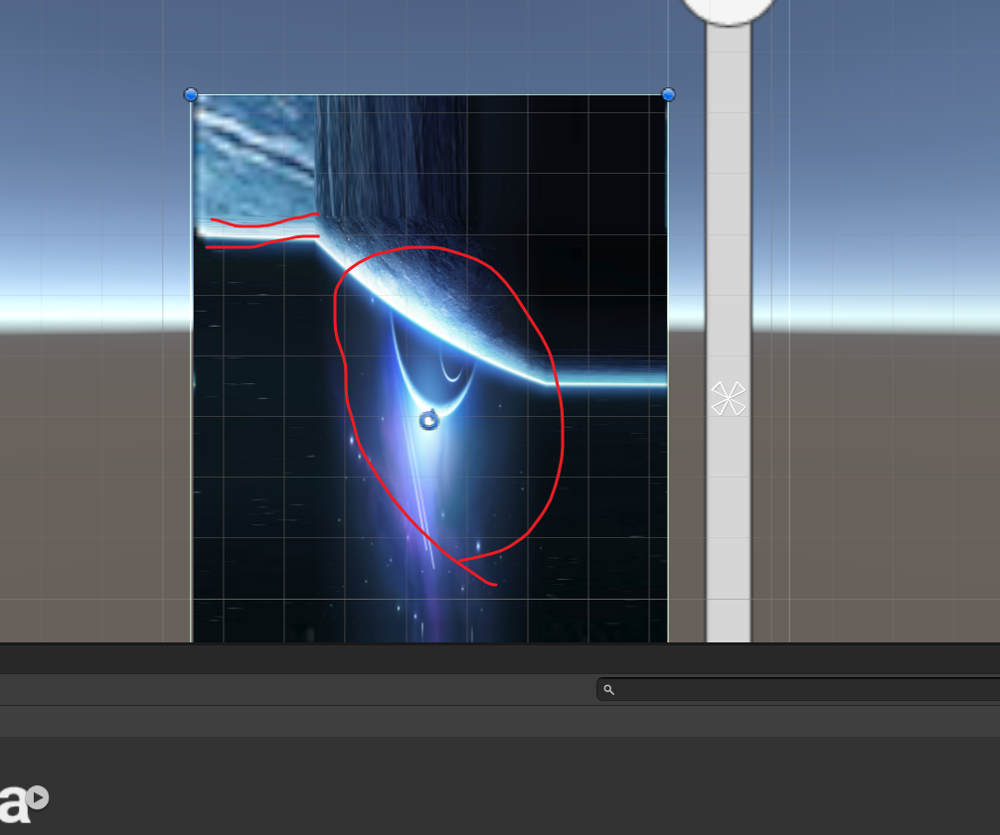这里可以看出来，我将图片进行缩小，中间部分都被挤压在一起了，但边框依旧是原来的像素大小（用在对话框这样的UI上会更明显）
button按钮用法比较简单，常用功能如下
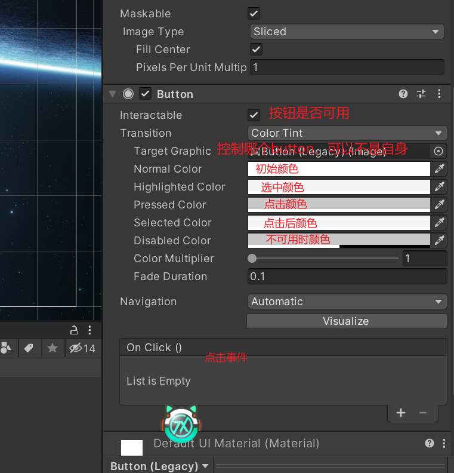除了点击更改颜色外，还可以点击更换图片。
更换图片就需要切换显示点击效果模式。
显示模式在Transition选项中修改
在unity中的单选按钮组件叫Toggle，我们可以使用官方为我们准备的，也可以自己做一个
Toggle和button一样有选中效果点击效果等等。
具体效果和button一样，看button的效果显示就好了。
这个Toggle虽然是单选按钮，但需要设置组才能实现单选效果。需要在单选按钮的服务梯身上加上ToggleGroup组件
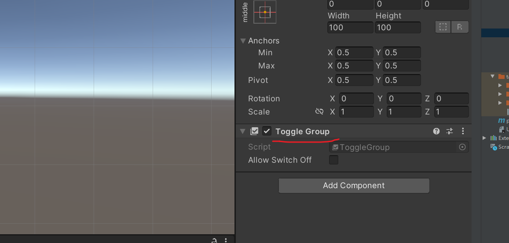加上组后还需要给各个单选按钮指定组，这样才能激活单选功能，不然不在一个组里的单选按钮可以多个选中。
滑动器的各个属性和button相似，具体可以看button
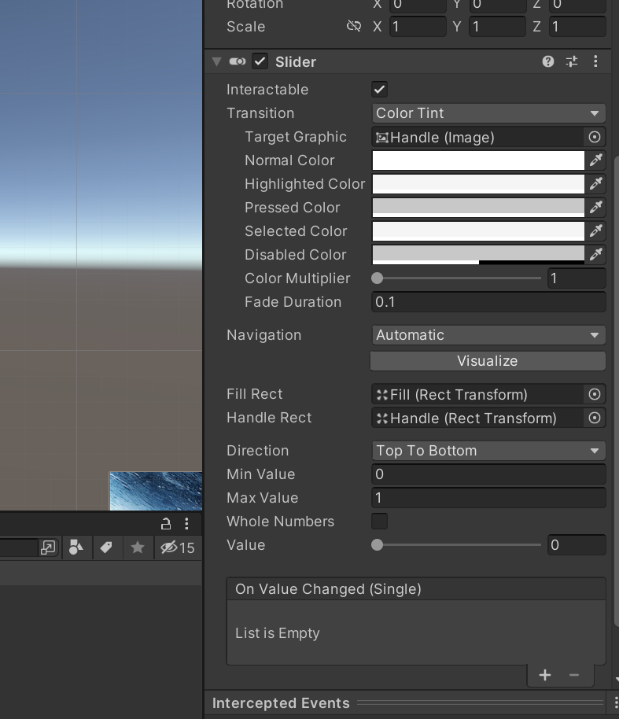在滑动器的Direction属性上可以设置滑动器的显示方式，例如竖排显示，从右到左滑动之类的
底部的几个value属性就不过多解释，看名子就能猜到功能。
滚动条和滑动条极其相似
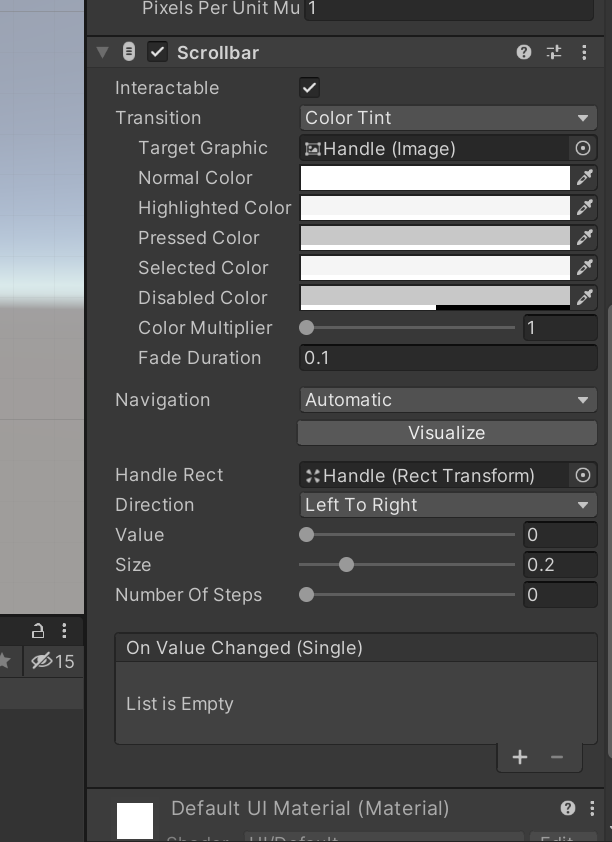用法和功能几乎都一样，当滚动条多用于背包系统的滑动，而滑动条多用于音量之类的效果
下拉框不过多解释，中间有一些选项和button相似
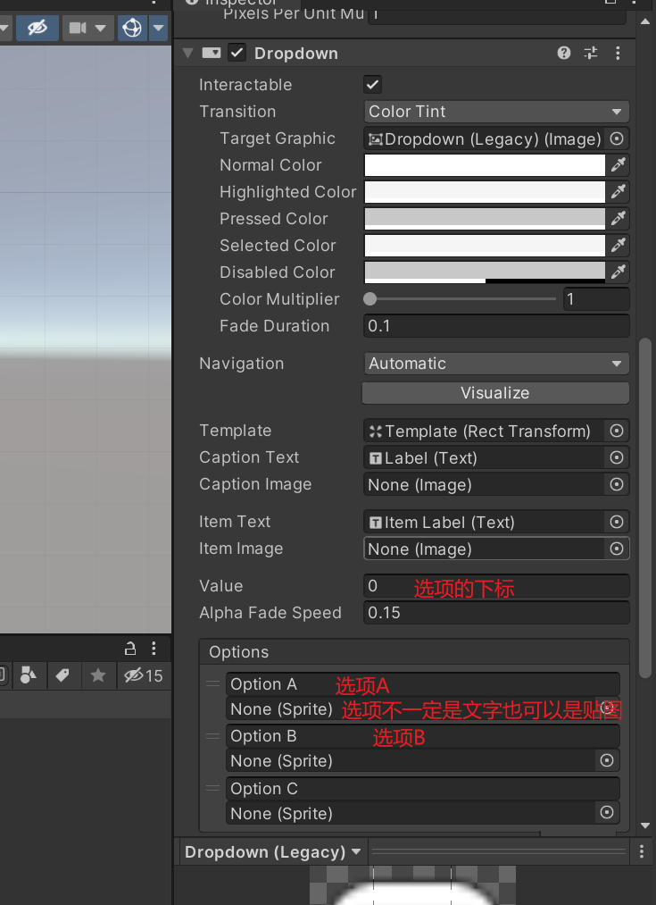当一个面板过长超过屏幕时，我们可以使用卷轴工具来进行滑动，用于查看超出的部分
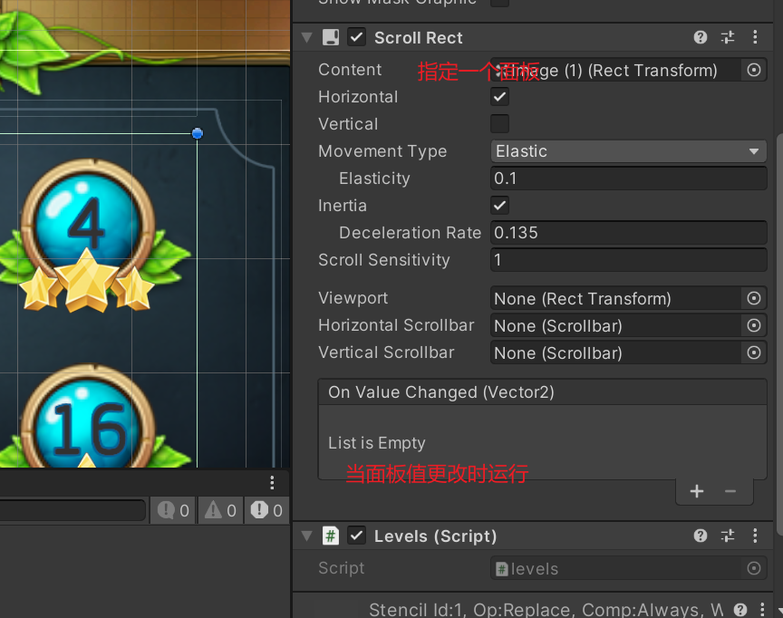想使用卷轴工具需要在游戏物体身上添加ScrollRect模块
添加这个模块后还需要将需要滑动处理的游戏对象放在该游戏对象的下方成为子物体
之后需要在ScrollRect模块的Content中指定滑动的对象
之后超出卷轴范围的物体就能进行滑动，滑动的时候坐标0是起点，1是终点
在这个模块中可以通过ScrollRect对象中的horizontalNormalizedPosition变量来获取横向的坐标，0是起点1是终点，返回的值就相当于是当前的浏览对象的百分比
通过normalizedPosition则是整体的百分比包含了纵向和横向
verticalNormalizedPosition则是纵向的。
在背包系统中，背包的格子需要我们进行排版，如果而且分辨率的不同还会影响排版的效果
在Unity中就有用于排版的组件叫GridLayoutGroup
我们只需要将其挂载至UI上，随后这个UI的子物体就会自动排版，我们还可以修改排版数据
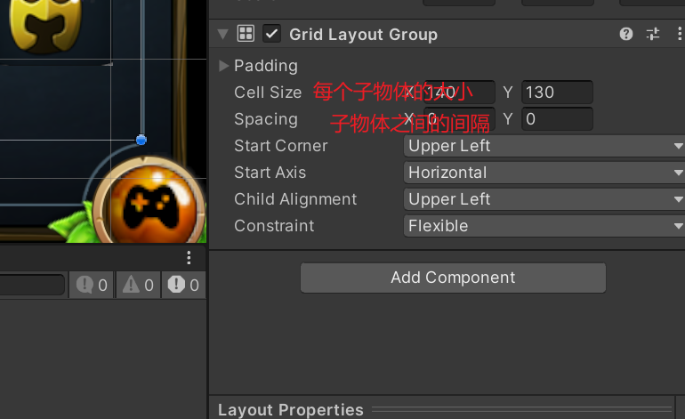轮廓组件可以在文字的外围做一个突出的效果，显示一层轮廓
组件名叫OutLine，操作极其简单。
阴影组件可以在文字外围显示一层阴影
组件名叫Shadow，操作极其简单。
想要检测UI触控需要在类中实现两个接口
IBeginDragHandler,IEndDragHandler
继承这两个接口后就能检测触控，这两个接口需要实现两个方法
OnBeginDrag() 用于检测拖拽开始
OnEndDrag() 用于检测拖拽结束